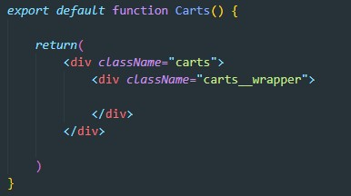
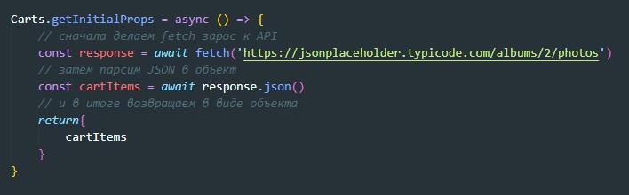
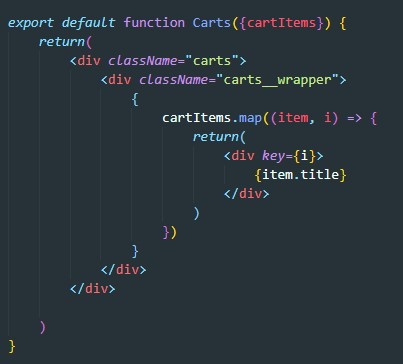
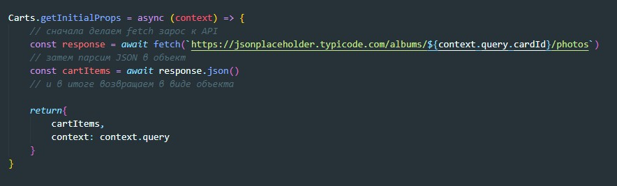
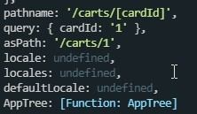

getInitialProps - это статический метод, который позволяет обращаться к REST API и получать данные из БД. Как это выглядит? Допустим у нас есть компонент который должен отрисовывать карточки.
После объявления дефолтной функции мы объявляем статический метод у нашей функции:
Теперь что бы получил эти данные в компоненте мы обращаемся к пропсам
Метод getInitialProps в качестве входного параметра принимает context - это объект который имеет ряд свойств
Список основных свойств:
